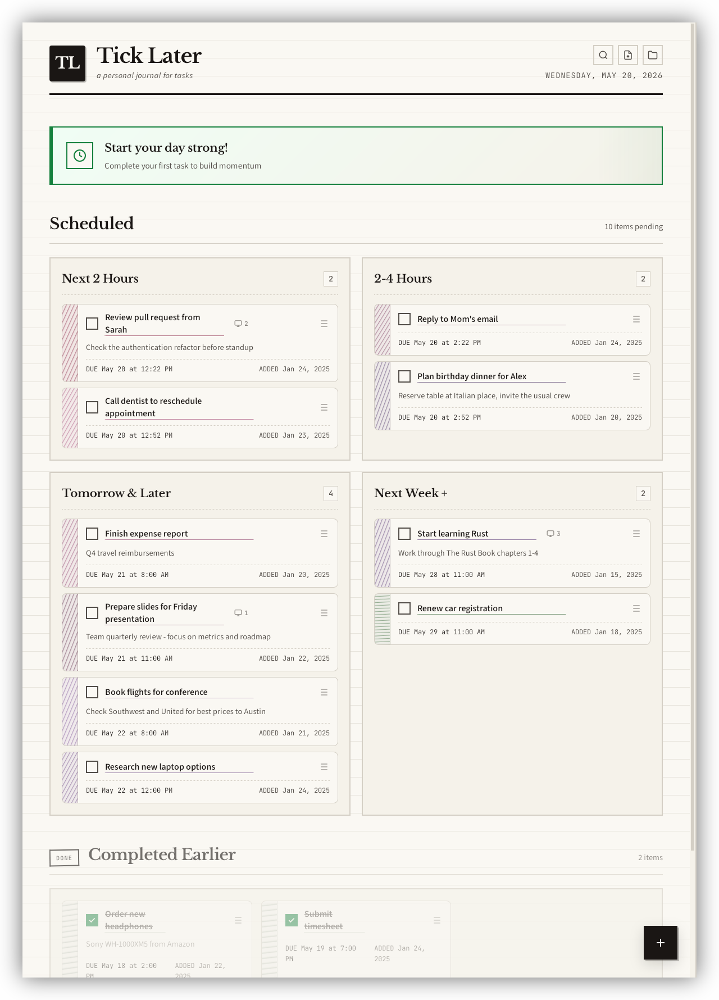

Stop fighting your task manager. Tick Later organizes your day into time buckets — not endless lists. Know exactly what needs attention now, what can wait, and what belongs to another day.

Features
Not another backlog you'll never revisit. Just what matters, organized by when it matters.
Tasks auto-sort into four buckets — Next 2 Hours, 2–4 Hours, Tomorrow & Later, Next Week+. Your view updates live as deadlines approach.
Reschedule any task by dragging it between time buckets. Push to Next Week+ for breathing room, or pull into Next 2 Hours to make it urgent — instantly.
Open a terminal session for any task with one click. Your task description stays visible while you work — perfect for developer workflows where context is everything.
Associate tasks with virtual desktops on Linux and switch to them with a single click. Your task context follows you across workspaces — no more hunting for where you were.
Warm cream paper, ruled lines, ink-style typography. No flashy animations, no notification red dots — just your tasks on a calm page. Designed to disappear into your workflow.
Your tasks live in a plain JSON file on your machine. No account, no cloud, no subscription. Your data is yours — readable, portable, and private. Always.
Download
Grab the latest release for your OS. No account, no installer sign-in, no strings attached.
macOS may show "tick-later is damaged and can't be opened" because the app isn't signed with an Apple Developer certificate. To fix it, open Terminal and run:
xattr -cr /Applications/tick-later.app
Or if you haven't moved it to Applications yet:
xattr -cr ~/Downloads/tick-later.app
This removes the macOS quarantine flag added to downloaded files.